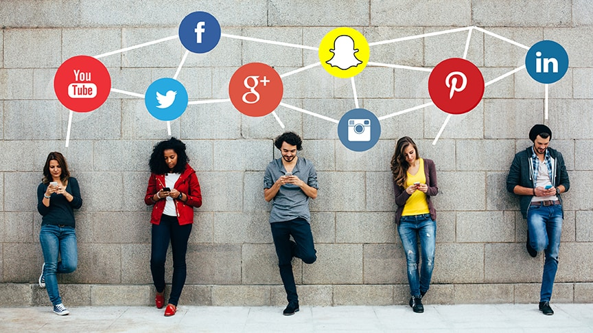

Social Media and its effects
September 31, 2024 by Shantae Saddler
 According to Charon (1990), Sociology is an academic discipline that examines the human being as social, a result of interaction, socialisation and social patterns.
Social media offers a new avenue for human interaction, creating new behaviours for sociologists to study. Social media began as an interaction between people using new forms of technology,
and the conversations became increasingly public. Interactionists believe that individuals create their social worlds through interacting with others. The ongoing process of interaction means that individuals
are constantly adjusting to each other. Social media has revolutionised the way people communicate and socialise on the web. The use of social media has the potential to affect the social skills of students as well as academic performance both positively and negatively.
This is because face-to-face communication is no longer required as a means to interact and communicate with others.
According to Charon (1990), Sociology is an academic discipline that examines the human being as social, a result of interaction, socialisation and social patterns.
Social media offers a new avenue for human interaction, creating new behaviours for sociologists to study. Social media began as an interaction between people using new forms of technology,
and the conversations became increasingly public. Interactionists believe that individuals create their social worlds through interacting with others. The ongoing process of interaction means that individuals
are constantly adjusting to each other. Social media has revolutionised the way people communicate and socialise on the web. The use of social media has the potential to affect the social skills of students as well as academic performance both positively and negatively.
This is because face-to-face communication is no longer required as a means to interact and communicate with others.
Mustapha (2013) defines socialization as the process whereby individuals learn about the culture of their society, in addition to “behaviours that are acceptable and those that are not.” (p.25).
One source consists of a magazine article “The Professional Side Effects of Social Media” published on February 18, 2020 by Eric Beichler. According to Beichler (2020), today’s generation has lost the ability and the need to genuinely communicate with each other face to face.
The impacts are both personal and professional. Beichler (2020) talks about how there is a problem of finding it hard to get to know each other through texting. We are not developing life skills in young people today to properly articulate messaging and meaningful communication.
We have lost the value and the need to focus on the individual we are speaking with or communicating with at the time of interaction. We have also not found enough free space in daily schedules to sit and visit with each other. Everyone and everything is moving so fast,
while results need to be measured and tasks completed before the end of the day.
Social Media VS Social Skills Findings
October 02,2024 by Shantae Saddler

Newspaper article “Negative Effects of Social Media on Communication” (Lucy White, Thu. Apr 9th, 2020) was also used. White (2020) talks about some of the negative effects social media has on social skills. Some of these effects include lack of use of native language,
change in talking style, people talk less and people would rather be locked away in one room. The frequent use of social media is leading us to a situation where people try to avoid talking with each other. Most people prefer to spend time using social networking sites instead of spending time with their family.
They remain busy enjoying chats on the different mediums of social applications and think it is more enjoyable to use such gadgets than spending time with their parents and siblings. The people who are habitual of communicating on social media have less abilities especially in terms of informative skills.
People who remain busy using social media do not find time for learning new communication skills. There is constant attention to social communication that does not allow them to explore and contribute. It lessens the research habit of its users. People try to spend time communicating with their friends instead of
exploring new techniques that can be economically beneficial for them in their future. Communication on social media has created a broad space between the new generation and family. Its users try to remain in their rooms and they want to spend time using Facebook.
Schools are one of the primary sources of socialisation and most of our social skills are developed there. All of the aims and objectives of this research was achieved and gave the researcher great insights into the topic of this research, ‘How Social Media Affects the Social Skills of Students’.
A questionnaire was used for the data collection method and the answers of the respondents were easily analysed using visual presentation instruments which provided the necessary statistics and facts. The hypothesis is true , social Media is likely to affect the social skills of students as it plays an integral part in today's society.